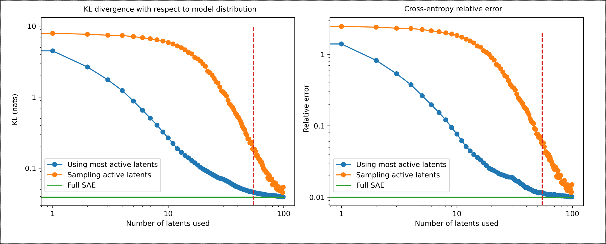
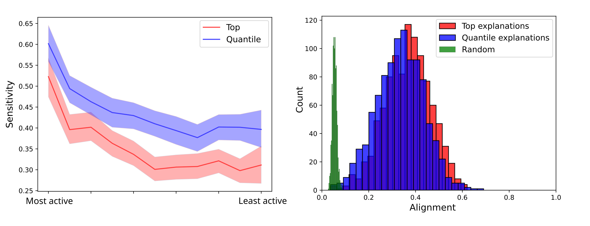
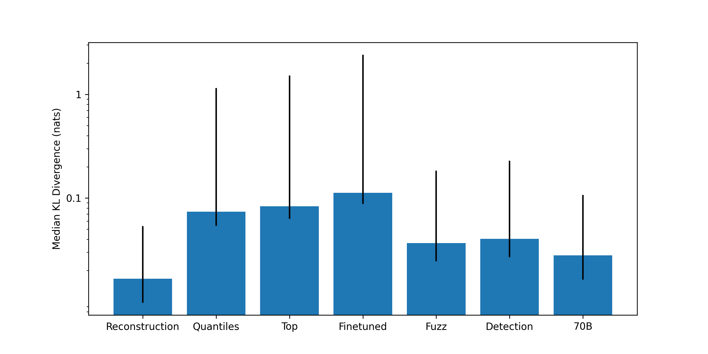
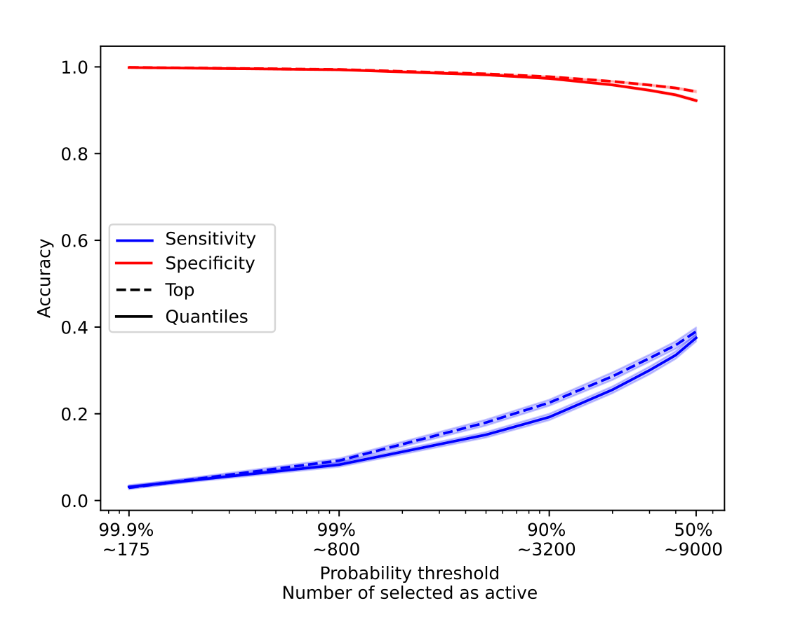
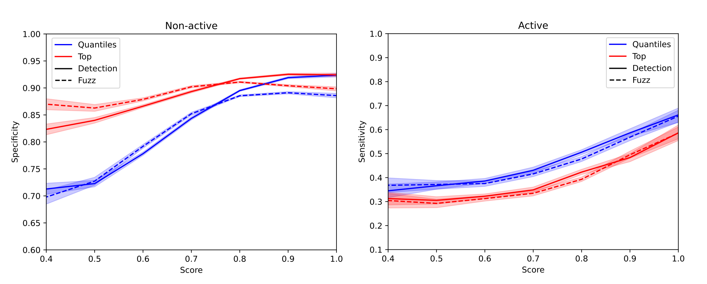
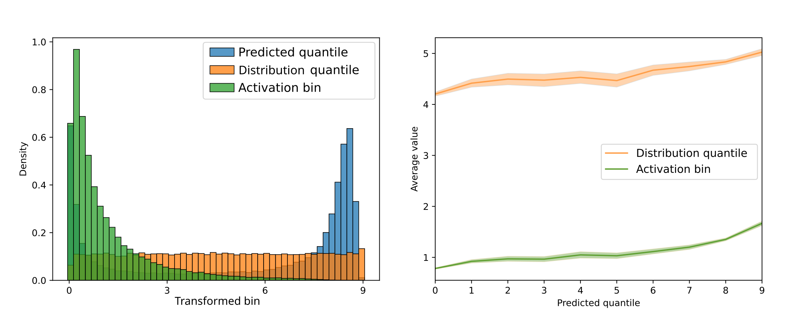

Our most recent work on using sparse autoencoders (SAEs) focused on automatically generating natural language interpretations for their latents and evaluating how good they are. If all the latents were interpretable, we could use the interpretations to simulate the latent activations, replacing the SAE encoder with an LLM and a natural language prompt. We should then be able to patch the activations generated by this natural language simulation back into the model and get nearly identical behavior to the original. In the limit, we could effectively "rewrite" the entire model in terms of interpretable features and interpretable operations on those features.
Unfortunately, the SAE itself cannot perfectly reconstruct the activations of the model, and replacing the SAE encoder with a natural language simulator adds an additional source of error, since our interpretations are imperfect. In this work we are trying to quantify the amount of error added by simulating the encoder in natural language. We decompose the problem into 3 sub-problems:
- Correctly identifying which latents are active (high sensitivity).
- Correctly identifying which latents are inactive (high specificity).
- Correctly simulating the value of the activations of the active latents.
Key results - We are unable to rewrite an entire layer of an LLM in natural language using current interpretations without dramatically degrading its performance. - Our interpretations of SAE latents can identify less than 50\% of active latents in arbitrary contexts. This fraction can however be enough to generate "coherent" text, because most of the highly active latents are correctly identified. - We find that current interpretations can't be used to effectively simulate the value of the activations of the model. - Although interpretations correctly identify 90% of non-active latents, a value closer to 99.9% is needed to generate "coherent" text if one requires that the model label all possible latents. - We find that the pre-generated scores for the interpretations are predictive of how often the model correctly identifies if latents are active or not, and find that the scores can be used by the model to calibrate its predictions. - The code needed to reproduce these results is available here, with scripts to run the experiments and generate the figures in the blog post.
How many latents are needed to recover the model behavior?
Patching a single SAE into the model already drops its performance significantly. Gao et. al (2024) showed that the increase in loss from patching in their SAE - with 16 million latents - on GPT-4 is equivalent to having trained it with 90\% less compute. In preliminary experiments we found that entirely replacing the SAE encoder with a natural language simulation almost completely destroys the performance of the model. Clearly, our interpretation pipeline needs improvement in order to achieve the goal of fully rewriting a layer of the model in natural language, let alone the entire model. In order to get a signal for how much we need to improve, we need to understand how many of the active latents we need to correctly identify to recover the performance of the model.
In this section we will consider the model with the SAE patched in to be the "ceiling" performance, assuming that we already are adding the SAE to the model and measuring how many of the active latents we need to correctly identify to recover the performance of the "patched" model. To measure this, we collect the next-token predictions of Gemma 2 9b over a set of 100 sequences of 64 tokens each. For each token, we also compute the reconstructed activations from the SAE on the target layer - layer 11 in our case - and patch them back into the model, collecting the resulting next-token predictions. We then measure the cross-entropy loss of these predictions, as well as their KL divergence with respect to the original "clean" predictions. We consider these numbers to be our "full SAE" ceiling. We then repeat this process using only a fixed number of active latents, which we choose either from the top active latents or we sample from the whole distribution. Results are shown in Figure 1.
We observe that a big fraction of the CE loss can be recovered using less than 50\% of the top active latents, but that we need to get most of the latents right if we are randomly sampling the ones that are correctly identified. We don't have access to the loss curves of Gemma 2 9b, but we expect that the recovered CE is probably equivalent to having trained the model on significantly less compute. A better way to judge the model's performance would be to do this reconstruction while the model is being benchmarked, but we leave this for future work.

Figure 1: KL divergence and CE loss for different fractions of correctly identified active latents. We compare the result of always using the most active latents vs. sampling which active latents to use. Using the most active latents recovers the performance much faster, and the KL between the original model and the truncated SAE is on the same order of magnitude as the full SAE using only 20\% of the latents. Having a relative error on the CE loss in the same order of magnitude is not a sufficient result, and the performance of the model is probably significantly affected. Horizontal dashed line is the average number of active latents used in evaluation.Using latent interpretations to predict if they are active
Knowing that it is possible for a model to "work" even when we don't correctly identify all the active latents, we focused on understanding how many of those latents could we correctly identify using our current interpretation approach. In our most recent work, we showed that our interpretations, when used to distinguish activating and non-activating examples, had a balanced accuracy of 76%, but that the accuracy could drop below 40% in the case of less active latents.
We tasked Llama 3.1 8b with predicting if a certain latent is active or not for the last token of a sequence, given the interpretation of the latent. We sample these sequences from RedPajama-V2, and we always select sequences with 32 tokens, although we find that these results do not significantly change as long as the sequence is long enough. For each sequence, all the active latents and 1000 randomly selected inactive latents are shown to the model, such that we can measure both the specificity and the sensitivity of the explanations. Consistent with our previous results, we find that the model identifies the active latents more accurately if their activations are higher - see Figure 2 first panel. In the same panel, we compare interpretations that were generated using the highest activating contexts against interpretations that were generated by sampling from the different quantiles as described in the article above.

Figure 2: Left panel: Sensitivity as a function of their activation value. Latents with lower activation values are harder to identify. Right panel: Distribution of the alignment between predicted active latents and the ground truth active latents, compared with the distribution of the alignment between random latents and the ground truth active latents.One problem with specificity is that it is an all-or-nothing metric. If the model does not predict the activating latents exactly right, but predicts latents that are "similar" to the true active latents, we would like to capture that. We propose to measure the cosine similarity between the decoder directions of the predicted latents and the ground truth active latents. In order to do this, though, we need a way to "match" the predicted latents to the ground truth ones. We use the Hungarian algorithm for this task, which yields the matching that maximizes the average cosine similarity between predicted and ground truth decoder directions. Intuitively, this is the most "forgiving" way of evaluating the model, and the same algorithm has been used to train neural networks to detect objects in images, where predicted bounding boxes need to be matched up with ground truth bounding boxes. The left panel of Figure 2 shows a histogram of the alignment, as measured by the average cosine similarity between the decoder directions of the predicted active latents and the ground truth active latents, for both interpretations based on the top most activating contexts (red) and interpretations based on every decile of the activation distribution (blue). As a baseline, we also show the distribution of the cosine similarities between randomly selected latents and the ground truth active latents (green). This distribution of alignments seems to indicate a similar conclusion to the measurement of specificity. If the model was selecting "similar" latents as active, the alignment observed would be higher than the average specificity.
We investigated different ways to improve the sensitivity of the model: we used Llama 3.1 70b instead of Llama 3.1 8b, and found while Llama 70b was better at identifying the active latents, on average it still had a sensitivity lower than 50\%. We also tried finetuning Llama 3.1 8b to predict active latents given interpretations. We find that while finetuning significantly improved the specificity of the model, it decreased the sensitivity, in part due to the high class imbalance observed. This is a research direction that we want to explore more in the future, because different mixtures of finetuning data might improve the results. Perhaps the most surprising result is that giving the model access to either the fuzzing score or the detection score improves the sensitivity of the model the most, more so than using the 70b model, although this slightly decreases the specificity compared with the 70b model, but not when compared with the Llama 3.1 8b model.
| Method | Sensitivity | F1 | AUC |
|---|---|---|---|
| Quantile interpretations | 0.42 (0.28-0.54) | 0.24 (0.18-0.29) | 0.82 (0.78-0.86) |
| Top interpretations | 0.34 (0.22-0.44) | 0.24 (0.18-0.30) | 0.80 (0.77-0.85) |
| Finetuned Llama 3.1 8b | 0.28 (0.18-0.36) | 0.23 (0.17-0.29) | 0.82 (0.79-0.87) |
| With Fuzzing Score | 0.58 (0.44-0.71) | 0.28 (0.23-0.33) | 0.84 (0.81-0.88) |
| With Detection Score | 0.57 (0.43-0.70) | 0.28 (0.23-0.33) | 0.84 (0.81-0.88) |
| Llama 3.1 70b | 0.44 (0.29-0.56) | 0.27 (0.21-0.31) | 0.84 (0.81-0.88) |
Table 1: Recall of active latents, F1 and AUC. We show the average of the results over >1000 prompts and the 25-75\% inter-quartile range. Values are rounded to 2 decimal places.
To summarize these results we compute the KL divergence over 1000 prompts using these different techniques and compare them with that of using the full SAE, see Figure 3. We observe that there is a much larger spread of KL divergences when compared to the full SAE reconstruction, mainly due to the fact that even when the model identifies >50\% of active latents, if it incorrectly identifies some of the top active latents, the KL divergence is very high (>10 nats). To account for this we show the median KL divergence and the 25-75\% inter-quartile range. As expected, the methods with higher recall of active latents also have lower KL divergence. This is mainly due to the fact that we are doubly "cheating" - the model is only asked to identify active latents, not their activation values, and we don't ask the model to identify the non-active latents. Below we will discuss how the picture changes when we try these more difficult tasks.

Figure 3: KL divergence for different methods to identify active latents, with respect with to the model distribution. We show the median KL divergence and the 25-75\% inter-quartile range. Reconstruction refers to using the full SAE, quantiles to using the interpretations generated by sampling from the quantiles of the activation distribution and top to using the interpretations generated by using the top most activating contexts to identify the active latents. The finetuned model uses top interpretations, the fuzzing and detections scores use quantile interpretations, as does the Llama 3.1 70b model.Due to the fact that, even on this easier task, we are not able to have a satisfactory performance, we believe that auto-interpretability techniques are still far from being able to be used to simulate the activations of the model, replacing the SAE with a natural language interface. Still, we think it could be argued that this experiment can give us some insights: looking at the active latents that were incorrectly identified as non-active, we could look for patterns, and understand if they are pathologically "uninterpretable" latents, or if their interpretation just needs to be improved. Similarly, we could try to narrow the interpretations of the non-active latents that were incorrectly identified as active.
Correctly identifying non-active latents
Current interpretations have higher specificity than sensitivity. Still, because there are so many more non-active latents than active latents, the precision of current interpretations is low. To put things into perspective, around 50 latents are active at any given time for the chosen SAE, and because the SAE has 131k latents, identifying non-active latents correctly 90% of the time means that we incorrectly identify 13k latents as active, several orders of magnitude more than the number of active latents. This means that one needs to identify 99.9 to 99.99\% of non-active latents to not "overload" the reconstructions with false positives. If we threshold the probability at which we consider a latent to be active, such that we only consider the expected number of active latents to be 50, we find that most of the time no active latents are correctly identified as active. In Figure 4 we show the predicted number of active latents as a function of the threshold. We find that the model is consistently overconfident and that even when selecting only the predictions where the model is more than 99.9\% confident, that would still correspond to about 170 active latents, more than 3 times the correct number, and that only 1% of the time a active latent in on that selection. If we set the threshold at 50%, 9000 latents are predicted to be active, and 40% of active features are correctly identified. This means that for this method to ever be successful the model has to be much more accurate at identifying non-active latents.

Figure 4: Sensitivity and specificity as a function of the probability threshold. We also report, for this particular method, the expected number of active latents given that threshold. We observe a clear trade-off between the accuracy of non-active and active latents, and that the accuracy of active latents significantly drops as we consider less and less possible active latents. Error bars correspond to 95\% confidence intervals.In our previous work we investigated computationally efficient methods for scoring latent interpretations. Here we find that they are predictive of whether a latent is correctly identified as either active or non-active, see Figure 5, although the relation is not linear. This is a good verification that these simple scores are able to capture how good interpretations are, although the fact that these scores seem to saturate at both low and high values makes us think that there is still significant room for improvement.

Figure 5: Sensitivity and specificity as a function of the fuzzing and detection scores. The scores are rounded to 1 decimal place and averaged. Error bars correspond to 95\% confidence intervals.Predicting the activation value with latent interpretations
The standard way people evaluate interpretations of latents is by doing simulation, where the model is tasked to predict the activation of the latent at different token positions and then the correlation between those values and the ground truth activations is used as a proxy for how good the interpretation is. In Bricken (2024), the authors suggest that simulation scoring could double as a substitute for the SAE. Here we focus on the simulation of the activation value at the last token of a sequence, and evaluate only the latents that are active. Once again this is "cheating", because we are only using latents that we know are active, but at this point we are just focusing on the feasibility of this simpler task rather than that of the real word scenario.
In this task we ask the model to predict a number, from 0 to 9, indicating how strongly the selected token is active, given the interpretation of the latent. We compare the most likely number according the model (the mode) for each latent with two different distributions: its activation value, and its quantile in the activation distribution. We find that the model predicts low and high values more frequently than the other values. We also compute the probability assigned to each of the 10 numbers and compute the mean prediction, and find that the distribution of means is very similar to the distribution of the modes.
The distribution of the means is shown in blue in the left panel of Figure 6, and compared with the distribution of normalized activation values (green), and the distribution of the activation quantiles (orange). We observe that higher predicted values correspond to higher activation values and activation quantiles- see the right panel of Figure 6- but the spread is so large that it does not seem possible to reliably predict the activation value of a latent using the interpretations. In Table 2, we show that correlation between the predicted value and the activation value of the latent and the activation quantile is low for all the methods.

Figure 6: Left panel: Distribution of the predicted activation values (blue), compared with the true activation values normalized to the range [0, 9] (green). The distribution in orange is nearly uniform by construction since it is a discretized version of the probability integral transform, it is also chosen to be in the same range. Right panel: Average activation bin and average quantile of the predicted activation values for each predicted value, for the top interpretations, which have the highest correlation.| Method | Correlation with activation bin | Correlation with distribution quantile |
|---|---|---|
| Quantile interpretations | 0.16 | 0.09 |
| Top interpretations | 0.21 | 0.11 |
| With Fuzzing Score | 0.18 | 0.08 |
| With Detection Score | 0.17 | 0.08 |
| Table 2: Pearson correlation between the predicted activation value and the activation value of the latent and the activation quantile of the latent. |
Conclusion
In this work, we explored several aspects of using natural language interpretations to simulate the activations of a sparse autoencoder. We found that:
- Current techniques struggle to accurately identify active latents, with sensitivity of around 40\%.
- While models are good at identifying non-active latents (>90% specificity), this isn't sufficient given the extreme imbalance between active and non-active latents. We would need 99.9%+ specificity to avoid overwhelming the reconstructions with false positives.
- Computationally efficient scoring methods like fuzzing and detection scores show promise in evaluating interpretation quality, though their non-linear relationship with accuracy suggests room for improvement.
- Predicting activation values using interpretations shows only weak correlations (0.1-0.2) with actual values, suggesting that current interpretations don't fully capture the quantitative aspects of latent activations.
These results indicate that while natural language interpretations provide some insight into latent behavior, they are not yet reliable enough to simulate model activations. Future work should focus on improving interpretation precision for non-active latents and developing better methods to capture quantitative aspects of latent behavior. Additionally, the development of more sophisticated scoring methods could help better evaluate and improve interpretation quality.
Acknowledgements
We would like to thank David Johnston for his helpful feedback.
Contributions
Nora and Gonçalo had the idea for these experiments. Gonçalo executed the experiments and wrote the first draft of the article. Nora provided feedback and did significant revisions.